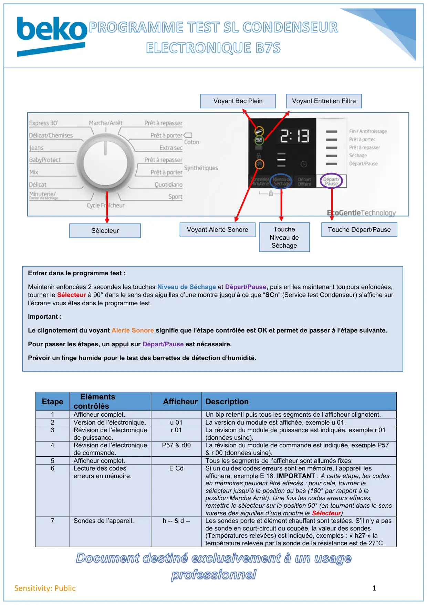
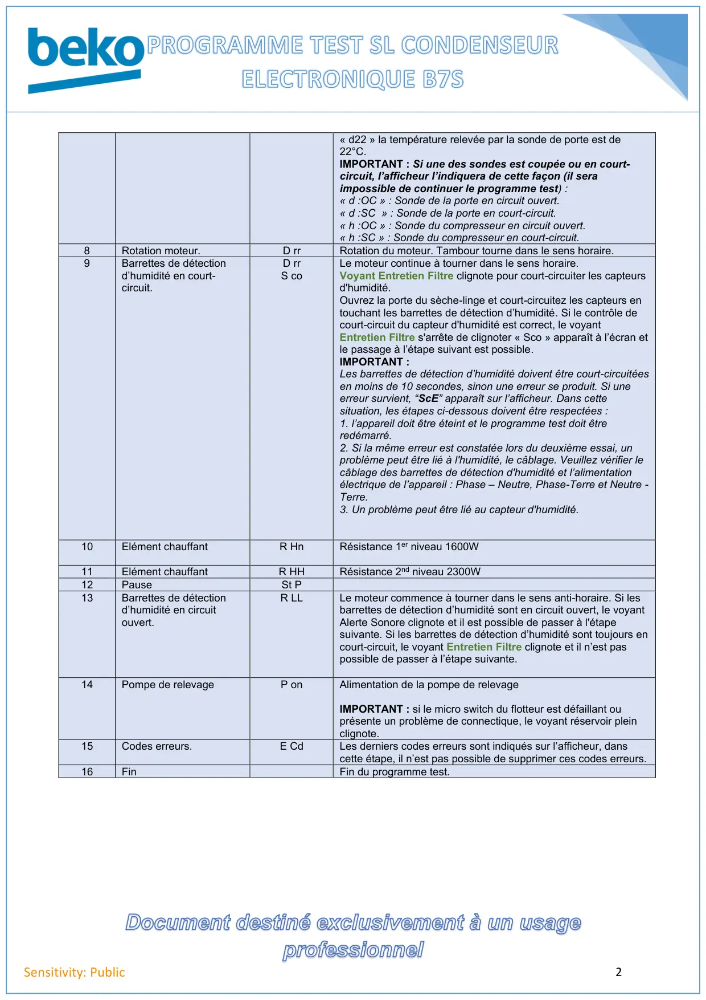
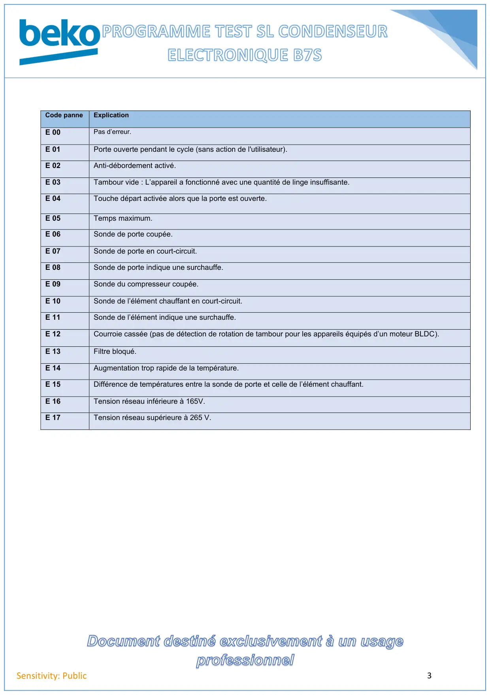

Prog Test seche linge B7S Condenseur

Document destiné exclusivement à un usageprofessionnel1Sensitivity: PublicEtapeElémentscontrôlésAfficheur Description1Afficheur complet.Un bip retenti puis tous les segments de l’afficheur clignotent.2Version de l’électronique.u 01La version du module est affichée, exemple u 01.3Révision de l’électroniquede puissance.r 01La révision du module de puissance est indiquée, exemple r 01(données usine).4Révision de l’électroniquede commande.P57 & r00La révision du module de commande est indiquée, exemple P57& r 00 (données usine).5Afficheur complet.Tous les segments de l’afficheur sont allumés fixes.6Lecture des codeserreurs en mémoire.E CdSi un ou des codes erreurs sont en mémoire, l’appareil lesaffichera, exemple E 18. IMPORTANT : A cette étape, les codesen mémoires peuvent être effacés : pour cela, tourner lesélecteur jusqu’à la position du bas (180° par rapport à laposition Marche Arrêt). Une fois les codes erreurs effacés,remettre le sélecteur sur la position 90° (en tournant dans le sensinverse des aiguilles d’une montre le Sélecteur).7Sondes de l’appareil.h -- & d --Les sondes porte et élément chauffant sont testées. S’il n’y a pasde sonde en court-circuit ou coupée, la valeur des sondes(Températures relevées) est indiquée, exemples : « h27 » latempérature relevée par la sonde de la résistance est de 27°C.SélecteurToucheNiveau deSéchageTouche Départ/PauseVoyant Alerte SonoreVoyant Bac PleinVoyant Entretien FiltreEntrer dans le programme test :Maintenir enfoncées 2 secondes les touches Niveau de Séchage et Départ/Pause, puis en les maintenant toujours enfoncées,tourner le Sélecteur à 90° dans le sens des aiguilles d’une montre jusqu’à ce que “SCn” (Service test Condenseur) s’affiche surl’écran= vous êtes dans le programme test.Important :Le clignotement du voyant Alerte Sonore signifie que l’étape contrôlée est OK et permet de passer à l’étape suivante.Pour passer les étapes, un appui sur Départ/Pause est nécessaire.Prévoir un linge humide pour le test des barrettes de détection d’humidité.
1 / 3
Document destiné exclusivement à un usageprofessionnel2Sensitivity: Public« d22 » la température relevée par la sonde de porte est de22°C.IMPORTANT : Si une des sondes est coupée ou en court-circuit, l’afficheur l’indiquera de cette façon (il seraimpossible de continuer le programme test) :« d :OC » : Sonde de la porte en circuit ouvert.« d :SC » : Sonde de la porte en court-circuit.« h :OC » : Sonde du compresseur en circuit ouvert.« h :SC » : Sonde du compresseur en court-circuit.8Rotation moteur.D rrRotation du moteur. Tambour tourne dans le sens horaire.9Barrettes de détectiond’humidité en court-circuit.D rrS coLe moteur continue à tourner dans le sens horaire.Voyant Entretien Filtre clignote pour court-circuiter les capteursd'humidité.Ouvrez la porte du sèche-linge et court-circuitez les capteurs entouchant les barrettes de détection d’humidité. Si le contrôle decourt-circuit du capteur d'humidité est correct, le voyantEntretien Filtre s'arrête de clignoter « Sco » apparaît à l’écran etle passage à l’étape suivant est possible.IMPORTANT :Les barrettes de détection d’humidité doivent être court-circuitéesen moins de 10 secondes, sinon une erreur se produit. Si uneerreur survient, “ScE” apparaît sur l’afficheur. Dans cettesituation, les étapes ci-dessous doivent être respectées :1. l’appareil doit être éteint et le programme test doit êtreredémarré.2. Si la même erreur est constatée lors du deuxième essai, unproblème peut être lié à l'humidité, le câblage. Veuillez vérifier lecâblage des barrettes de détection d'humidité et l’alimentationélectrique de l’appareil : Phase – Neutre, Phase-Terre et Neutre -Terre.3. Un problème peut être lié au capteur d'humidité.10Elément chauffantR HnRésistance 1er niveau 1600W11Elément chauffantR HHRésistance 2nd niveau 2300W12PauseSt P13Barrettes de détectiond’humidité en circuitouvert.R LLLe moteur commence à tourner dans le sens anti-horaire. Si lesbarrettes de détection d’humidité sont en circuit ouvert, le voyantAlerte Sonore clignote et il est possible de passer à l'étapesuivante. Si les barrettes de détection d’humidité sont toujours encourt-circuit, le voyant Entretien Filtre clignote et il n’est paspossible de passer à l’étape suivante.14Pompe de relevageP onAlimentation de la pompe de relevageIMPORTANT : si le micro switch du flotteur est défaillant ouprésente un problème de connectique, le voyant réservoir pleinclignote.15Codes erreurs.E CdLes derniers codes erreurs sont indiqués sur l’afficheur, danscette étape, il n’est pas possible de supprimer ces codes erreurs.16FinFin du programme test.
2 / 3
Document destiné exclusivement à un usageprofessionnel3Sensitivity: PublicCode panneExplicationE 00Pas d’erreur.E 01Porte ouverte pendant le cycle (sans action de l'utilisateur).E 02Anti-débordement activé.E 03Tambour vide : L’appareil a fonctionné avec une quantité de linge insuffisante.E 04Touche départ activée alors que la porte est ouverte.E 05Temps maximum.E 06Sonde de porte coupée.E 07Sonde de porte en court-circuit.E 08Sonde de porte indique une surchauffe.E 09Sonde du compresseur coupée.E 10Sonde de l’élément chauffant en court-circuit.E 11Sonde de l’élément indique une surchauffe.E 12Courroie cassée (pas de détection de rotation de tambour pour les appareils équipés d’un moteur BLDC).E 13Filtre bloqué.E 14Augmentation trop rapide de la température.E 15Différence de températures entre la sonde de porte et celle de l’élément chauffant.E 16Tension réseau inférieure à 165V.E 17Tension réseau supérieure à 265 V.
3 / 3